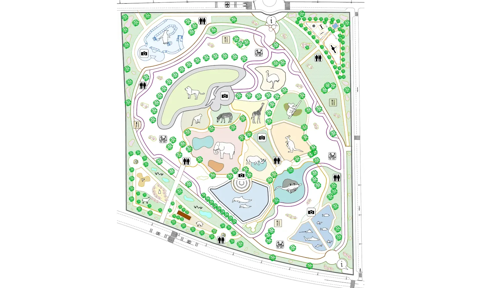
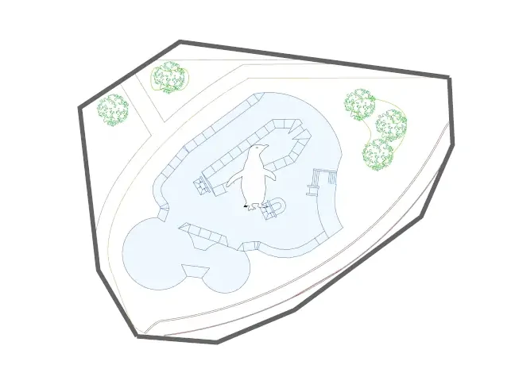
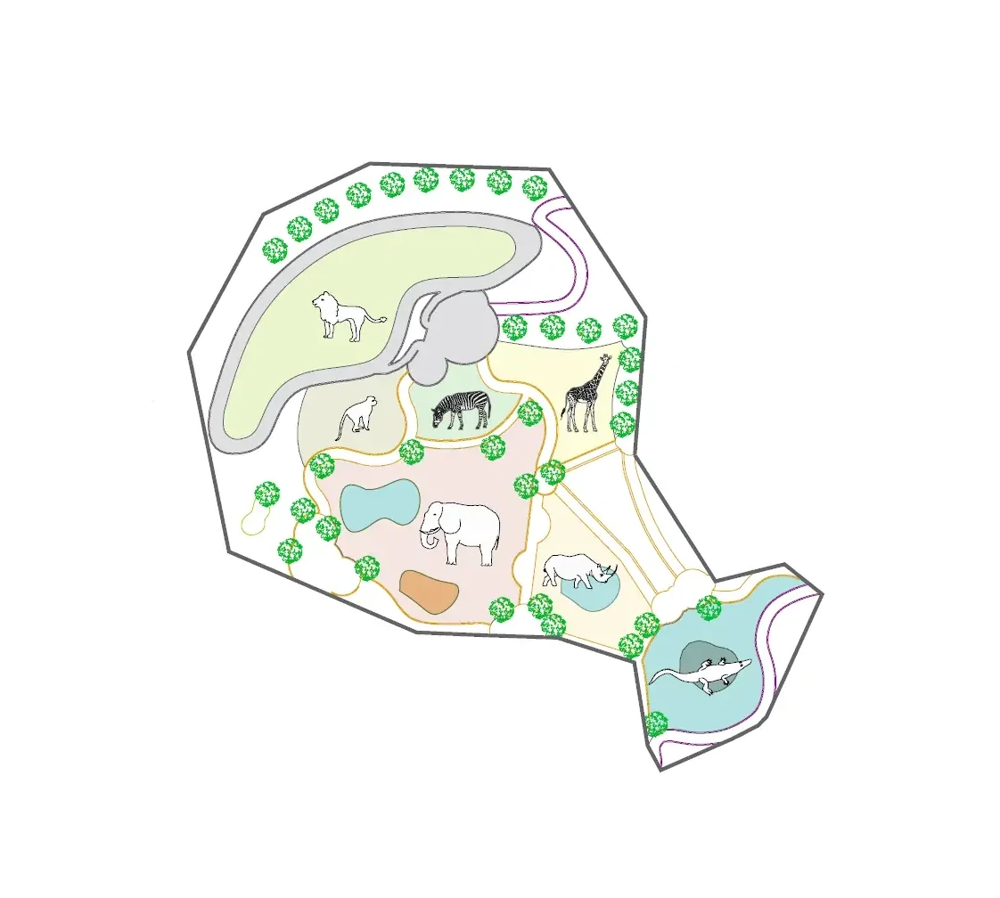
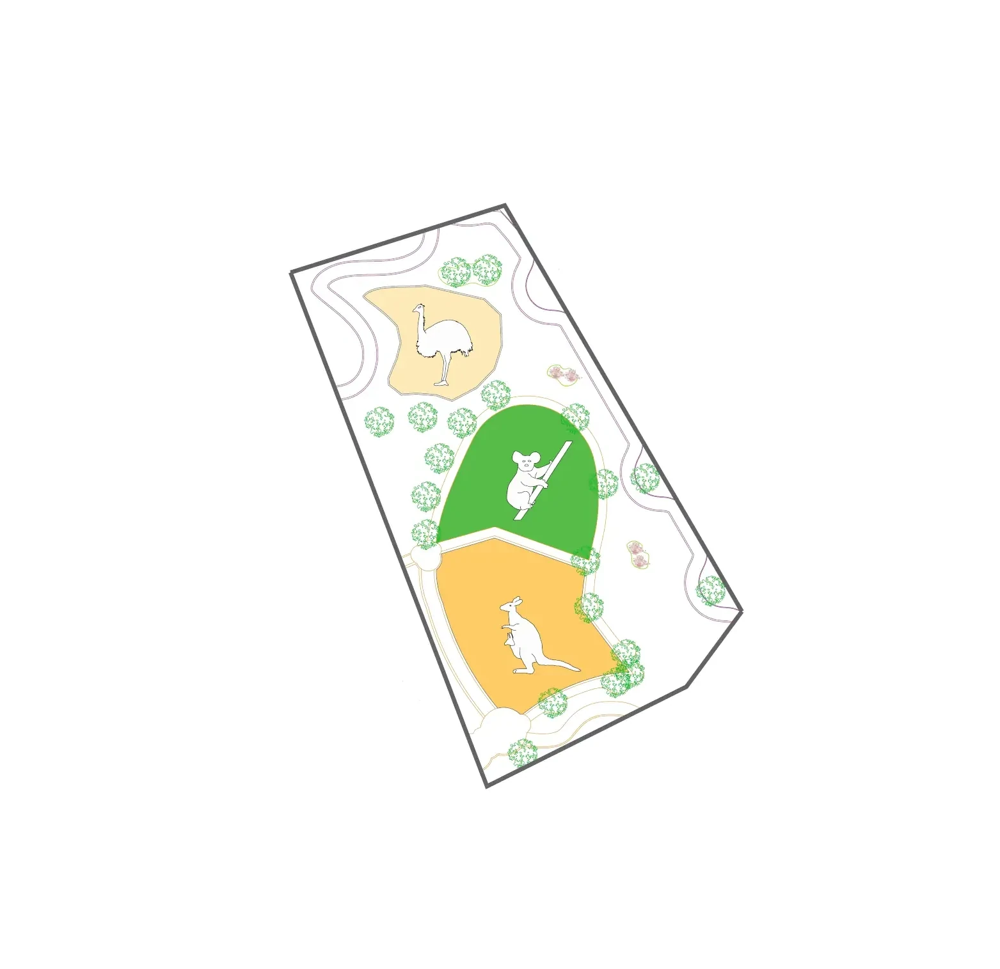
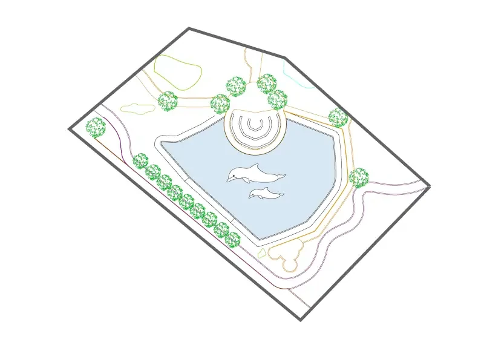
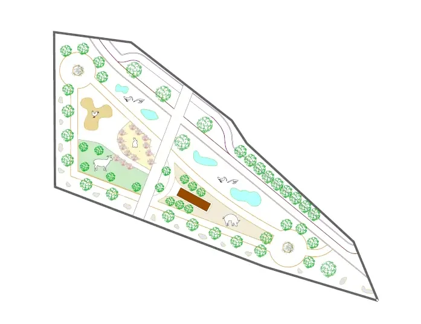
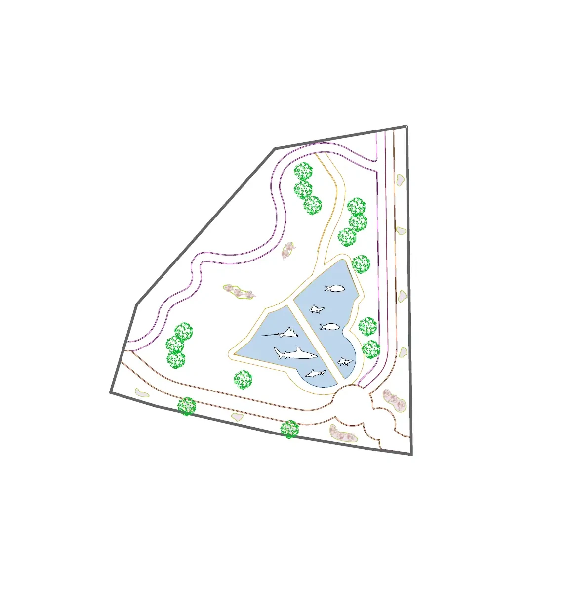

Mapa de Charnia
Aquí tienes el mapa de Charnia para que te pierdas nada del zoo
Leyenda:
Fotografías
Aseos
Merenderos
Restaurantes
Información
-

Mapa general de Charnia.
-

Zona del Polo Norte, en esta zona podrás ver pingüinos.
-

Zona Africana, en esta zona podrás ver leones, monos, cebras, jirafas,
elefantes, rinocerontes y cocodrilos
-

Zona Australiana, en esta zona podrás ver avestruces, koalas y canguros. Además
podrás participar en actividades con los wallabys.
-

Zona del delfinario, aquí podrás participar en actividades con los delfines.
-

Zona de la granja, aquí podrás ver cabras, gallinas, conejos, cerdos y patos.
Además podrás
participar en actividades de la granja.
-

Zona del acuario, aquí podrás ver peces y tiburones.